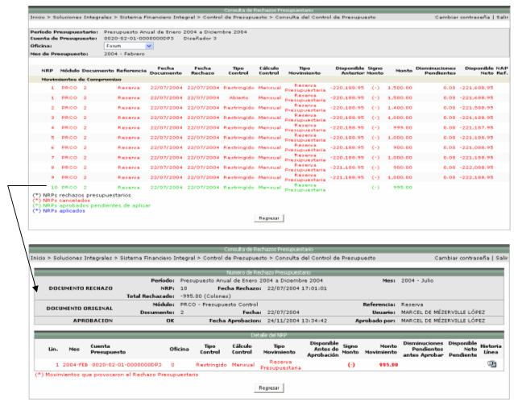

En esta consulta se presenta una lista de las cuentas, con la información respectiva del tipo de control y el cálculo de control, según el periodo presupuestario seleccionado como filtro:
Se debe de seleccionar una cuenta y a continuación se le presentará una pantalla como la siguiente, donde se le estará mostrando los montos autorizados, consumidos y disponibles, según el método de cálculo de control que tenga la cuenta.
Es importante mencionar que la información que se presenta en esta pantalla, se puede filtrar por las oficinas que tienen asociadas, los centros funcionales a los que el usuario tiene permiso de consultar. Por ejemplo si el usuario seleccionó en el filtro de centros funcionales de la pantalla anterior, Todas las Cuentas Permitidas entonces en la siguiente pantalla en el filtro de Oficinas se le desplegará las oficinas de todos los centros funcionales, mientras que si se seleccionó un centro específico, solamente se podrá ver la oficina de ese centro funcional:

Además para ver información adicional por registro, se debe de seleccionar uno y al lado derecho de la pantalla se le estará desplegando la información adicional:


Detalle de NRPs
Los registros se presentan en cuatro diferentes colores, esto con el fin de que el usuario pueda identificar en que estado se encuentra la información:
Los registros que aparezcan en color NEGRO son NRPs rechazos presupuestarios.
Los registros que aparezcan en color ROJO son los NRPs cancelados.
Los registros que aparezcan en color VERDE son NRPs aprobados pendientes de aplicar.
Los registros que aparezcan en color AZUL son los NRPs aplicados.
